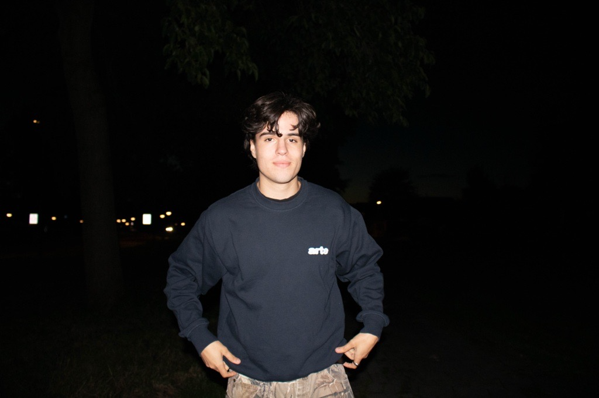

Voor dit portfolio verbind ik mijn beroepspraktijk bij De Schierstins aan de zeven burgerschapsthema’s. Mijn beroepsproduct is de organisatie van de Zomerfietstocht 2026, een recreatief en cultureel evenement tussen De Schierstins en Fogelsangh State.

De Schierstins in Feanwâlden is een bijzondere historische locatie waar erfgoed, cultuur en evenementen samenkomen. Tijdens mijn stage leer ik hoe een culturele organisatie activiteiten voorbereidt en uitvoert. De werkzaamheden gaan niet alleen over praktisch regelen, maar ook over communiceren met bezoekers, samenwerken met collega’s en rekening houden met de omgeving.
Voor mij past De Schierstins goed bij mijn opleiding, omdat evenementen hier vaak een culturele of maatschappelijke waarde hebben. Het gaat niet alleen om bezoekers ontvangen, maar ook om mensen iets meegeven over geschiedenis, cultuur en de regio.
Mijn beroepsproduct is de organisatie van de Zomerfietstocht 2026. Dit is een fietstocht van ongeveer 40 kilometer waarbij deelnemers starten en eindigen bij De Schierstins of Fogelsangh State. De tocht is bedoeld voor recreatieve fietsers, senioren, toeristen en mensen die geïnteresseerd zijn in natuur en cultuur.
Ik heb binnen dit project gewerkt aan onderdelen zoals de route, promotie, deelnemersadministratie, vrijwilligers, voorzieningen en voorbereiding van materialen. Daardoor laat dit beroepsproduct goed zien wat mijn vak inhoudt: plannen, overzicht houden, communiceren, keuzes maken en verantwoordelijkheid nemen.
Als toekomstig evenementenorganisator moet ik ervoor zorgen dat een evenement niet alleen leuk is, maar ook veilig, duidelijk, haalbaar, gastvrij en maatschappelijk verantwoord.
Identiteit gaat over wie je bent, waar je vandaan komt en wat belangrijk voor je is. Cultuur gaat over gewoonten, geschiedenis, taal, tradities en erfgoed. In de evenementenbranche is cultuur belangrijk, omdat evenementen vaak laten zien wat een plek of groep mensen bijzonder maakt.
De Zomerfietstocht past sterk bij dit thema, omdat de route deelnemers laat kennismaken met Friese cultuur en de omgeving van de Noardlike Fryske Wâlden. De Schierstins en Fogelsangh State zijn historische locaties. Door deze plekken te verbinden in een fietstocht wordt cultuur op een laagdrempelige manier zichtbaar gemaakt.
Ik heb geleerd dat een evenement meer kan zijn dan alleen een activiteit. Het kan ook helpen om cultureel erfgoed onder de aandacht te brengen. Mijn verantwoordelijkheid als professional is om respectvol om te gaan met de locatie, de geschiedenis en de doelgroep.
Mediawijsheid betekent dat je bewust en kritisch omgaat met media, online communicatie en informatie. Privacy gaat over het beschermen van persoonsgegevens. Bij evenementen is dit belangrijk, omdat je vaak werkt met deelnemersgegevens, foto’s, promotie en online inschrijvingen.
Voor de Zomerfietstocht worden gegevens van deelnemers gebruikt, zoals naam, e-mailadres, telefoonnummer en betaalstatus. Deze gegevens zijn nodig voor de organisatie, maar mogen niet zomaar gedeeld worden. Ook bij het maken van foto’s of video’s tijdens het evenement moet rekening worden gehouden met toestemming en professionele communicatie.
Ik heb geleerd dat privacy niet iets is wat je achteraf regelt, maar iets waar je vanaf het begin rekening mee moet houden. Als evenementenorganisator moet ik zorgvuldig werken en duidelijk zijn naar deelnemers over waarvoor hun gegevens worden gebruikt.
Vitaal burgerschap gaat over gezondheid, welzijn, energie en balans. Het gaat om goed voor jezelf zorgen, maar ook om een omgeving creëren waarin anderen gezond en veilig kunnen meedoen.
De Zomerfietstocht stimuleert beweging en een actieve leefstijl. Deelnemers zijn buiten, fietsen door de natuur en kunnen in hun eigen tempo deelnemen. Tegelijkertijd moet de organisatie rekening houden met rustmomenten, duidelijke route-informatie, weersomstandigheden en veiligheid onderweg.
Ik heb geleerd dat vitaliteit ook bij organiseren hoort. Tijdens de voorbereiding moet ik mijn eigen planning bewaken, op tijd communiceren en overzicht houden. Tijdens het evenement moet ik meedenken over het welzijn van deelnemers en vrijwilligers.
Diversiteit betekent dat mensen verschillen in leeftijd, achtergrond, ervaring, cultuur, gezondheid of interesses. Inclusie betekent dat iedereen zich welkom voelt en mee kan doen.
De Zomerfietstocht richt zich op een brede doelgroep, zoals senioren, recreatieve fietsers, toeristen en inwoners uit de regio. Daarom moet de communicatie duidelijk zijn en moet het evenement laagdrempelig blijven. De route, starttijden en informatie moeten begrijpelijk zijn voor verschillende deelnemers.
Ik heb geleerd dat je als organisator niet alleen vanuit jezelf moet denken. Wat voor mij logisch is, is dat niet altijd voor iemand anders. Daarom moet ik rekening houden met verschillende behoeften en zorgen voor een gastvrije sfeer.
Financiën en economie gaan over inkomsten, uitgaven, budgetteren en keuzes maken met geld. In de evenementenbranche is dit belangrijk, omdat elk evenement kosten heeft en financieel haalbaar moet blijven.
Voor de Zomerfietstocht moet rekening worden gehouden met kosten voor catering, promotie, materialen, voorzieningen, een ijsvriezer en eventuele extra benodigdheden. Ook inkomsten uit ticketverkoop of deelnamekosten spelen mee. Door offertes te vergelijken leer ik keuzes maken op basis van prijs, kwaliteit en praktische haalbaarheid.
Ik heb geleerd dat organiseren niet alleen creatief is, maar ook zakelijk. Een goed idee werkt pas als het financieel uitvoerbaar is. Als professional moet ik kunnen onderbouwen waarom ik bepaalde keuzes maak.
De rechtstaat gaat over regels, rechten, plichten en veiligheid. Democratie betekent dat mensen kunnen meedenken, hun mening kunnen geven en dat beslissingen eerlijk en zorgvuldig worden genomen.
Bij de Zomerfietstocht moet ik rekening houden met verkeersregels, veiligheid, aansprakelijkheid, privacyregels en duidelijke afspraken met betrokken partijen. Ook moet de communicatie naar deelnemers eerlijk en volledig zijn, zodat iedereen weet waar hij of zij aan toe is.
Ik heb geleerd dat regels niet bedoeld zijn om lastig te zijn, maar om deelnemers, vrijwilligers en de organisatie te beschermen. Als toekomstig evenementenorganisator moet ik verantwoordelijkheid nemen en afspraken goed vastleggen.
Klimaat en milieu gaan over duurzaam omgaan met de aarde, natuur, energie, afval en vervoer. Ook evenementen hebben invloed op het milieu, bijvoorbeeld door afval, stroomgebruik, vervoer en materialen.
De Zomerfietstocht past goed bij duurzaamheid, omdat fietsen een milieuvriendelijke manier van vervoer is. Daarnaast kan de organisatie bewuste keuzes maken, zoals afval scheiden, lokale leveranciers gebruiken, papier beperken en materialen hergebruiken.
Ik heb geleerd dat duurzame keuzes vaak klein beginnen. Als organisator kan ik niet alles oplossen, maar ik kan wel bewust keuzes maken die minder belastend zijn voor de omgeving.
Tijdens mijn stage bij De Schierstins heb ik geleerd dat evenementenorganisatie veel breder is dan alleen een leuke activiteit neerzetten. Je werkt met mensen, regels, geld, planning, veiligheid, communicatie en maatschappelijke verantwoordelijkheid. Door de Zomerfietstocht te koppelen aan de zeven burgerschapsthema’s zie ik beter hoe mijn beroep verbonden is met de samenleving.
Ik ben trots dat ik heb kunnen meewerken aan een evenement dat beweging, cultuur, natuur en ontmoeting combineert. Wat ik vooral meeneem is dat ik als professional overzicht moet houden, duidelijk moet communiceren en rekening moet houden met verschillende belangen. Een goed evenement is niet alleen goed georganiseerd, maar ook verantwoord en waardevol voor de omgeving.